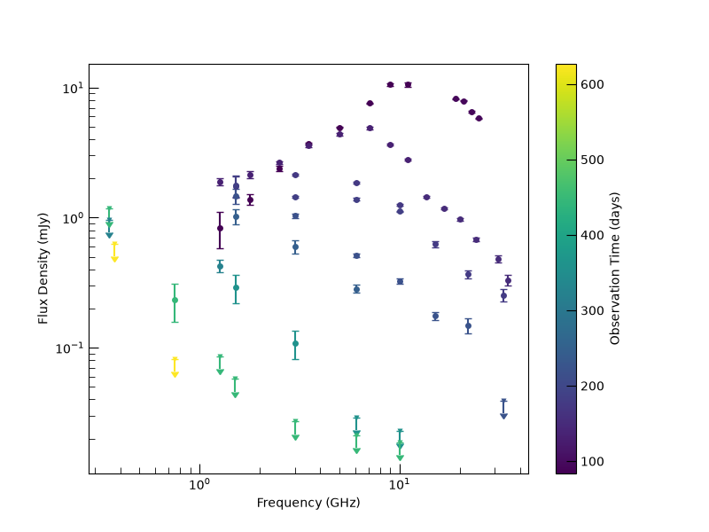
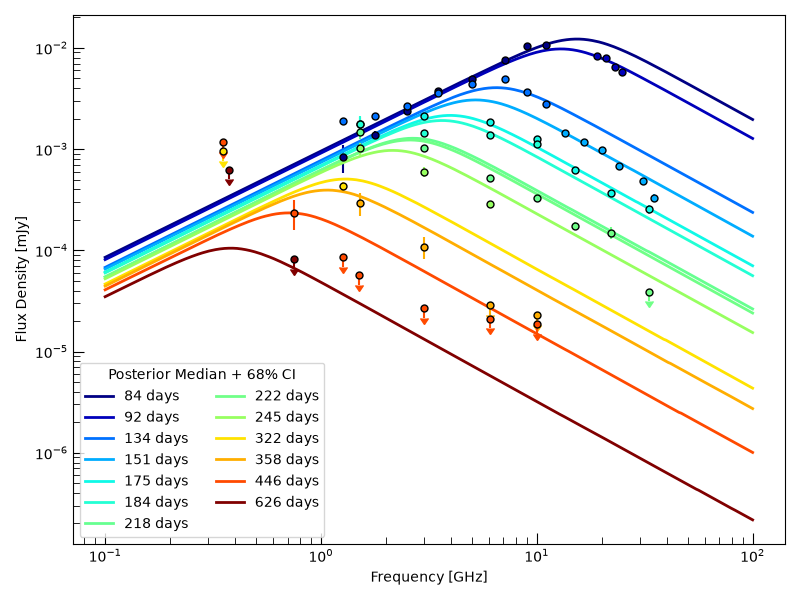
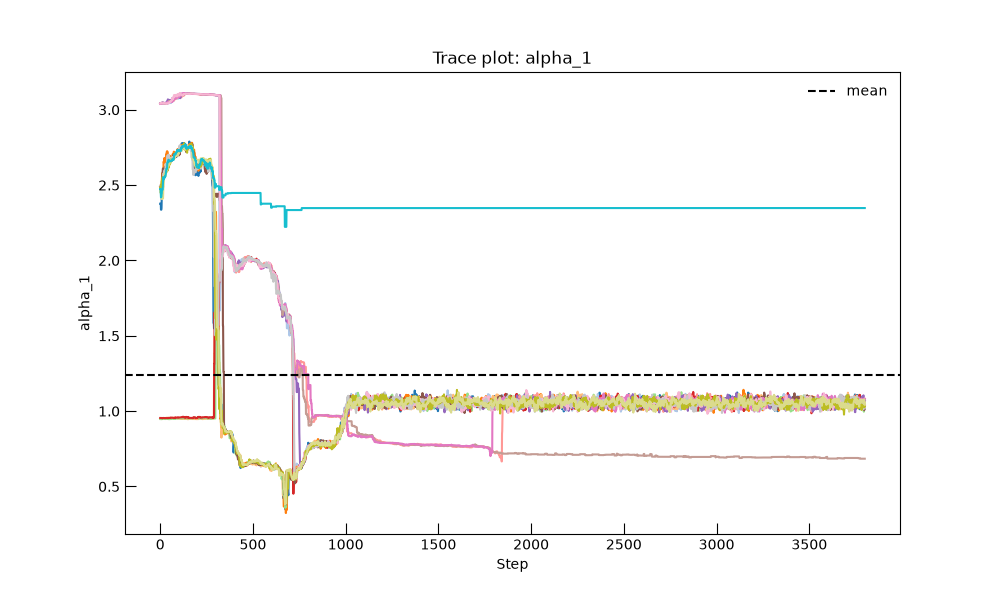
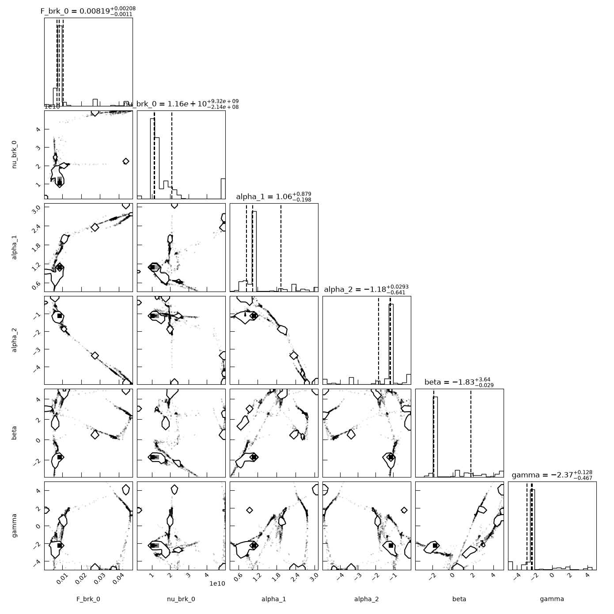

Note
Go to the end to download the full example code.
Fitting a Time-Evolving Synchrotron SED#
This example demonstrates a complete end-to-end inference workflow in Trilobite:
Loading radio photometry data using the
RadioPhotometryContainer, including some special configurations for analysis.Use an evolving SED model from
models.SEDsto model the radio emission.Running MCMC with
EmceeSampler.Visualizing posterior predictive spectra.
We model the dataset using a PL_Evolving_SSA_SED_Model,
which describes a broken power-law spectrum whose break frequency and amplitude
evolve in time.
import matplotlib.pyplot as plt
import numpy as np
from astropy import units as u
from astropy.time import Time
from trilobite.data.photometry import RadioPhotometryContainer
from trilobite.inference import GaussianCensoredLikelihood, InferenceProblem
from trilobite.inference.sampling import EmceeSampler
from trilobite.models.generic import PL_Evolving_SBPL_Model
from trilobite.utils.plot_utils import set_plot_style
set_plot_style()
np.random.seed(42)
Loading and Inspecting the Data#
We begin by loading a synthetic radio photometry dataset bundled with the documentation. The file is nearly in the correct format for direct ingestion, but requires two small adjustments:
The column
time_midobsis remapped to the canonical nametime.The times in the file are absolute (Julian Date), so we convert them to relative time measured from a physically meaningful reference epoch.
For AT2018COW, from which this dataset was randomly generated,
we adopt the optical peak time reported in the literature
as the reference epoch. Internally, the
RadioPhotometryContainer
converts all times to relative days since the reference epoch, which is
the canonical time representation used throughout the modeling and
inference pipelines.
The resulting object is a validated, immutable data container that enforces schema consistency, unit correctness, and detection/upper-limit bookkeeping.
Note
A more detailed discussion of the various options for loading data can be found
in the documentation for RadioPhotometryContainer.
# Set the data file.
data_file = "../../../../docs/source/_data/example_photometry.fits"
# Set the peak time from the literature.
optical_peak_time = Time(58284.3, format="mjd", scale="utc")
photometry_data = RadioPhotometryContainer.from_file(
data_file,
column_map={"time_midobs": "time"},
time_starts=optical_peak_time,
internal_time_scale="utc",
internal_time_format="jd",
)
print(f"Loaded {photometry_data.n_obs} observations.")
# Group observations separated by more than 3 days into distinct epochs
photometry_data.set_epochs_from_time_gaps(max_gap=3.0 * u.day)
Loaded 62 observations.
The photometry container includes a built-in plotting routine that automatically handles detections and upper limits.

Constructing the Model and Likelihood#
For this example, we’ll use the PL_Evolving_SSA_SED_Model, which describes provides
a phenomenological description of generic synchrotron SEDs from time evolving transients. Generically, we
assume that each epoch has an SED described by a smooth broken power-law with fixed slopes \(\alpha_1\)
and \(\alpha_2\) below and above a break frequency \(\nu_{\rm brk}(t)\), respectively.
The break frequency evolves in time as
where \(\nu_{\rm brk,0}\) is the break frequency at a reference time \(t_0\) and \(\beta\) is the power-law index describing the temporal evolution of the break frequency. The flux density at the break also evolves in time as
where \(F_{\rm brk,0}\) is the flux density at the break at the reference time and \(\gamma\) is the power-law index describing the temporal evolution of the break flux density. The parameter \(s\) controls the smoothness of the break, and is fixed to a value of 0.5 for this analysis. The reference time \(t_0\) is fixed to 100 days, which is a reasonable timescale for the evolution of the SED in this dataset. The model is implemented in physical units, so all parameters have associated units that are automatically handled throughout the inference process.
More detailed information can be found in the API documentation for
PL_Evolving_SSA_SED_Model.
# Generate the model object.
model = PL_Evolving_SBPL_Model()
# Convert the photometry data to the format required for inference. This standardizes
# the data so that it is more easily ingested by the likelihood and model, and also ensures that all units are
# properly handled and consistent with the model's base units.
inference_data = photometry_data.to_inference_data(model=model)
# Construct the likelihood, which automatically handles detections and upper limits.
likelihood = GaussianCensoredLikelihood(
model=model,
data=inference_data,
)
# Finally, we construct the inference problem by combining the likelihood with the model and data.
problem = InferenceProblem(likelihood=likelihood)
Defining Priors#
We assign broad uniform priors to the spectral parameters. Units are automatically handled and coerced into model base units.
problem.set_prior("F_brk_0", "uniform", lower=1e-3 * u.mJy, upper=1e3 * u.mJy)
problem.set_prior("nu_brk_0", "uniform", lower=0.01 * u.GHz, upper=50 * u.GHz)
problem.set_prior("alpha_1", "uniform", lower=0.0, upper=5.0)
problem.set_prior("alpha_2", "uniform", lower=-5.0, upper=0.0)
problem.set_prior("beta", "uniform", lower=-5.0, upper=5.0)
problem.set_prior("gamma", "uniform", lower=-5.0, upper=5.0)
# Fix nuisance parameters
problem.parameters["s"].initial_value = 0.5
problem.parameters["s"].freeze = True
problem.parameters["t_0"].initial_value = (100 * u.day).to(u.s)
problem.parameters["t_0"].freeze = True
# Set reasonable initial values for the free parameters to help with MCMC convergence.
problem.parameters["F_brk_0"].initial_value = 0.01 # Jy
problem.parameters["nu_brk_0"].initial_value = 1.1e10 # Hz
problem.parameters["alpha_1"].initial_value = 1
problem.parameters["alpha_2"].initial_value = -1.0
problem.parameters["beta"].initial_value = 2
problem.parameters["gamma"].initial_value = 1
Running MCMC#
We now sample the posterior using an ensemble sampler.
sampler = EmceeSampler(problem, n_walkers=16)
result = sampler.run(20_000, progress=True)
samples = result.get_flat_samples(burn=4000, thin=10)
0% | | 🦖 0/20000 [00:00<?, ?it/s]
0% | | 🦖 27/20000 [00:00<01:14, 268.18it/s]
0% | | 🦖 60/20000 [00:00<01:05, 304.15it/s]
0% | | 🦖 99/20000 [00:00<00:58, 342.77it/s]
1% | | 🦖 142/20000 [00:00<00:52, 375.96it/s]
1% | | 🦖 183/20000 [00:00<00:51, 387.56it/s]
1% | | 🦖 223/20000 [00:00<00:50, 390.59it/s]
1% |▏ | 🦖 267/20000 [00:00<00:48, 405.06it/s]
2% |▏ | 🦖 309/20000 [00:00<00:48, 408.65it/s]
2% |▏ | 🦖 351/20000 [00:00<00:47, 410.14it/s]
2% |▏ | 🦖 394/20000 [00:01<00:47, 414.54it/s]
2% |▏ | 🦖 437/20000 [00:01<00:46, 418.91it/s]
2% |▏ | 🦖 480/20000 [00:01<00:46, 420.16it/s]
3% |▎ | 🦖 525/20000 [00:01<00:45, 427.23it/s]
3% |▎ | 🦖 568/20000 [00:01<00:45, 426.81it/s]
3% |▎ | 🦖 613/20000 [00:01<00:45, 430.09it/s]
3% |▎ | 🦖 657/20000 [00:01<00:44, 432.85it/s]
4% |▎ | 🦖 701/20000 [00:01<00:44, 430.12it/s]
4% |▎ | 🦖 745/20000 [00:01<00:45, 426.21it/s]
4% |▍ | 🦖 789/20000 [00:01<00:44, 429.37it/s]
4% |▍ | 🦖 832/20000 [00:02<00:44, 427.72it/s]
4% |▍ | 🦖 875/20000 [00:02<00:44, 425.54it/s]
5% |▍ | 🦖 918/20000 [00:02<00:45, 423.62it/s]
5% |▍ | 🦖 962/20000 [00:02<00:44, 426.16it/s]
5% |▌ | 🦖 1005/20000 [00:02<00:44, 425.44it/s]
5% |▌ | 🦖 1050/20000 [00:02<00:43, 431.71it/s]
5% |▌ | 🦖 1094/20000 [00:02<00:43, 431.07it/s]
6% |▌ | 🦖 1139/20000 [00:02<00:43, 434.65it/s]
6% |▌ | 🦖 1185/20000 [00:02<00:42, 440.97it/s]
6% |▌ | 🦖 1230/20000 [00:02<00:43, 435.03it/s]
6% |▋ | 🦖 1274/20000 [00:03<00:43, 435.37it/s]
7% |▋ | 🦖 1319/20000 [00:03<00:42, 437.98it/s]
7% |▋ | 🦖 1363/20000 [00:03<00:43, 431.99it/s]
7% |▋ | 🦖 1407/20000 [00:03<00:43, 431.39it/s]
7% |▋ | 🦖 1451/20000 [00:03<00:43, 427.52it/s]
7% |▋ | 🦖 1495/20000 [00:03<00:43, 430.00it/s]
8% |▊ | 🦖 1539/20000 [00:03<00:43, 426.15it/s]
8% |▊ | 🦖 1582/20000 [00:03<00:43, 423.34it/s]
8% |▊ | 🦖 1627/20000 [00:03<00:42, 428.05it/s]
8% |▊ | 🦖 1670/20000 [00:03<00:43, 424.19it/s]
9% |▊ | 🦖 1713/20000 [00:04<00:43, 422.74it/s]
9% |▉ | 🦖 1756/20000 [00:04<00:43, 417.21it/s]
9% |▉ | 🦖 1798/20000 [00:04<00:44, 412.01it/s]
9% |▉ | 🦖 1843/20000 [00:04<00:43, 421.39it/s]
9% |▉ | 🦖 1887/20000 [00:04<00:42, 426.74it/s]
10% |▉ | 🦖 1931/20000 [00:04<00:42, 429.83it/s]
10% |▉ | 🦖 1975/20000 [00:04<00:41, 432.17it/s]
10% |█ | 🦖 2019/20000 [00:04<00:41, 432.43it/s]
10% |█ | 🦖 2063/20000 [00:04<00:41, 428.69it/s]
11% |█ | 🦖 2108/20000 [00:05<00:41, 434.01it/s]
11% |█ | 🦖 2153/20000 [00:05<00:40, 438.24it/s]
11% |█ | 🦖 2197/20000 [00:05<00:41, 433.13it/s]
11% |█ | 🦖 2241/20000 [00:05<00:41, 429.09it/s]
11% |█▏ | 🦖 2284/20000 [00:05<00:41, 423.67it/s]
12% |█▏ | 🦖 2327/20000 [00:05<00:42, 416.58it/s]
12% |█▏ | 🦖 2369/20000 [00:05<00:42, 416.96it/s]
12% |█▏ | 🦖 2412/20000 [00:05<00:42, 418.44it/s]
12% |█▏ | 🦖 2454/20000 [00:05<00:42, 414.24it/s]
12% |█▏ | 🦖 2496/20000 [00:05<00:42, 412.71it/s]
13% |█▎ | 🦖 2538/20000 [00:06<00:42, 408.86it/s]
13% |█▎ | 🦖 2579/20000 [00:06<00:43, 403.15it/s]
13% |█▎ | 🦖 2621/20000 [00:06<00:42, 405.85it/s]
13% |█▎ | 🦖 2662/20000 [00:06<00:43, 398.86it/s]
14% |█▎ | 🦖 2702/20000 [00:06<00:44, 386.91it/s]
14% |█▎ | 🦖 2741/20000 [00:06<00:45, 377.25it/s]
14% |█▍ | 🦖 2779/20000 [00:06<00:46, 371.96it/s]
14% |█▍ | 🦖 2817/20000 [00:06<00:46, 369.17it/s]
14% |█▍ | 🦖 2854/20000 [00:06<00:46, 365.27it/s]
14% |█▍ | 🦖 2891/20000 [00:06<00:47, 363.19it/s]
15% |█▍ | 🦖 2928/20000 [00:07<00:47, 359.30it/s]
15% |█▍ | 🦖 2964/20000 [00:07<00:47, 357.17it/s]
15% |█▌ | 🦖 3000/20000 [00:07<00:48, 353.07it/s]
15% |█▌ | 🦖 3036/20000 [00:07<00:48, 350.94it/s]
15% |█▌ | 🦖 3072/20000 [00:07<00:48, 347.87it/s]
16% |█▌ | 🦖 3107/20000 [00:07<00:48, 346.65it/s]
16% |█▌ | 🦖 3142/20000 [00:07<00:48, 344.14it/s]
16% |█▌ | 🦖 3177/20000 [00:07<00:49, 342.73it/s]
16% |█▌ | 🦖 3212/20000 [00:07<00:49, 340.02it/s]
16% |█▌ | 🦖 3247/20000 [00:08<00:48, 341.95it/s]
16% |█▋ | 🦖 3282/20000 [00:08<00:48, 341.64it/s]
17% |█▋ | 🦖 3318/20000 [00:08<00:48, 346.43it/s]
17% |█▋ | 🦖 3355/20000 [00:08<00:47, 350.28it/s]
17% |█▋ | 🦖 3391/20000 [00:08<00:47, 346.82it/s]
17% |█▋ | 🦖 3427/20000 [00:08<00:47, 348.37it/s]
17% |█▋ | 🦖 3462/20000 [00:08<00:48, 338.35it/s]
17% |█▋ | 🦖 3496/20000 [00:08<00:48, 338.13it/s]
18% |█▊ | 🦖 3530/20000 [00:08<00:49, 335.11it/s]
18% |█▊ | 🦖 3564/20000 [00:08<00:49, 335.28it/s]
18% |█▊ | 🦖 3599/20000 [00:09<00:48, 339.04it/s]
18% |█▊ | 🦖 3633/20000 [00:09<00:48, 338.23it/s]
18% |█▊ | 🦖 3668/20000 [00:09<00:48, 338.74it/s]
19% |█▊ | 🦖 3703/20000 [00:09<00:47, 339.74it/s]
19% |█▊ | 🦖 3738/20000 [00:09<00:47, 341.73it/s]
19% |█▉ | 🦖 3773/20000 [00:09<00:47, 338.53it/s]
19% |█▉ | 🦖 3809/20000 [00:09<00:47, 342.03it/s]
19% |█▉ | 🦖 3845/20000 [00:09<00:46, 345.06it/s]
19% |█▉ | 🦖 3880/20000 [00:09<00:46, 346.48it/s]
20% |█▉ | 🦖 3915/20000 [00:09<00:46, 344.60it/s]
20% |█▉ | 🦖 3950/20000 [00:10<00:47, 340.86it/s]
20% |█▉ | 🦖 3985/20000 [00:10<00:46, 342.61it/s]
20% |██ | 🦖 4020/20000 [00:10<00:47, 339.39it/s]
20% |██ | 🦖 4054/20000 [00:10<00:47, 338.25it/s]
20% |██ | 🦖 4089/20000 [00:10<00:46, 338.65it/s]
21% |██ | 🦖 4124/20000 [00:10<00:46, 341.61it/s]
21% |██ | 🦖 4159/20000 [00:10<00:46, 341.87it/s]
21% |██ | 🦖 4194/20000 [00:10<00:45, 343.72it/s]
21% |██ | 🦖 4231/20000 [00:10<00:44, 351.23it/s]
21% |██▏ | 🦖 4268/20000 [00:11<00:44, 353.94it/s]
22% |██▏ | 🦖 4304/20000 [00:11<00:44, 355.29it/s]
22% |██▏ | 🦖 4340/20000 [00:11<00:44, 353.82it/s]
22% |██▏ | 🦖 4376/20000 [00:11<00:44, 352.50it/s]
22% |██▏ | 🦖 4412/20000 [00:11<00:44, 351.39it/s]
22% |██▏ | 🦖 4448/20000 [00:11<00:44, 353.00it/s]
22% |██▏ | 🦖 4484/20000 [00:11<00:44, 349.56it/s]
23% |██▎ | 🦖 4519/20000 [00:11<00:44, 348.58it/s]
23% |██▎ | 🦖 4554/20000 [00:11<00:44, 345.74it/s]
23% |██▎ | 🦖 4589/20000 [00:11<00:44, 344.87it/s]
23% |██▎ | 🦖 4624/20000 [00:12<00:46, 333.70it/s]
23% |██▎ | 🦖 4658/20000 [00:12<00:46, 329.51it/s]
23% |██▎ | 🦖 4692/20000 [00:12<00:47, 323.82it/s]
24% |██▎ | 🦖 4725/20000 [00:12<00:47, 321.45it/s]
24% |██▍ | 🦖 4758/20000 [00:12<00:48, 317.27it/s]
24% |██▍ | 🦖 4790/20000 [00:12<00:48, 314.77it/s]
24% |██▍ | 🦖 4823/20000 [00:12<00:47, 316.37it/s]
24% |██▍ | 🦖 4855/20000 [00:12<00:48, 314.66it/s]
24% |██▍ | 🦖 4887/20000 [00:12<00:47, 315.73it/s]
25% |██▍ | 🦖 4919/20000 [00:12<00:48, 312.66it/s]
25% |██▍ | 🦖 4951/20000 [00:13<00:48, 311.50it/s]
25% |██▍ | 🦖 4983/20000 [00:13<00:48, 312.41it/s]
25% |██▌ | 🦖 5015/20000 [00:13<00:47, 312.25it/s]
25% |██▌ | 🦖 5048/20000 [00:13<00:47, 315.52it/s]
25% |██▌ | 🦖 5081/20000 [00:13<00:47, 316.76it/s]
26% |██▌ | 🦖 5113/20000 [00:13<00:46, 317.03it/s]
26% |██▌ | 🦖 5145/20000 [00:13<00:47, 315.83it/s]
26% |██▌ | 🦖 5178/20000 [00:13<00:46, 317.78it/s]
26% |██▌ | 🦖 5210/20000 [00:13<00:46, 317.21it/s]
26% |██▌ | 🦖 5242/20000 [00:13<00:46, 316.80it/s]
26% |██▋ | 🦖 5274/20000 [00:14<00:46, 316.51it/s]
27% |██▋ | 🦖 5306/20000 [00:14<00:46, 315.34it/s]
27% |██▋ | 🦖 5338/20000 [00:14<00:46, 315.18it/s]
27% |██▋ | 🦖 5370/20000 [00:14<00:46, 314.78it/s]
27% |██▋ | 🦖 5402/20000 [00:14<00:47, 309.44it/s]
27% |██▋ | 🦖 5434/20000 [00:14<00:46, 309.93it/s]
27% |██▋ | 🦖 5466/20000 [00:14<00:46, 310.13it/s]
27% |██▋ | 🦖 5498/20000 [00:14<00:46, 311.12it/s]
28% |██▊ | 🦖 5530/20000 [00:14<00:46, 311.89it/s]
28% |██▊ | 🦖 5562/20000 [00:15<00:46, 312.19it/s]
28% |██▊ | 🦖 5595/20000 [00:15<00:45, 314.70it/s]
28% |██▊ | 🦖 5627/20000 [00:15<00:45, 315.86it/s]
28% |██▊ | 🦖 5659/20000 [00:15<00:45, 315.41it/s]
28% |██▊ | 🦖 5691/20000 [00:15<00:45, 313.63it/s]
29% |██▊ | 🦖 5723/20000 [00:15<00:45, 315.14it/s]
29% |██▉ | 🦖 5755/20000 [00:15<00:45, 314.06it/s]
29% |██▉ | 🦖 5787/20000 [00:15<00:45, 312.68it/s]
29% |██▉ | 🦖 5819/20000 [00:15<00:45, 313.24it/s]
29% |██▉ | 🦖 5851/20000 [00:15<00:45, 313.70it/s]
29% |██▉ | 🦖 5884/20000 [00:16<00:44, 316.09it/s]
30% |██▉ | 🦖 5916/20000 [00:16<00:44, 316.15it/s]
30% |██▉ | 🦖 5948/20000 [00:16<00:44, 314.91it/s]
30% |██▉ | 🦖 5980/20000 [00:16<00:44, 316.40it/s]
30% |███ | 🦖 6012/20000 [00:16<00:44, 317.17it/s]
30% |███ | 🦖 6044/20000 [00:16<00:43, 317.82it/s]
30% |███ | 🦖 6076/20000 [00:16<00:43, 316.54it/s]
31% |███ | 🦖 6108/20000 [00:16<00:44, 315.61it/s]
31% |███ | 🦖 6140/20000 [00:16<00:43, 315.87it/s]
31% |███ | 🦖 6173/20000 [00:16<00:43, 317.65it/s]
31% |███ | 🦖 6205/20000 [00:17<00:43, 318.31it/s]
31% |███ | 🦖 6237/20000 [00:17<00:43, 317.83it/s]
31% |███▏ | 🦖 6269/20000 [00:17<00:43, 316.36it/s]
32% |███▏ | 🦖 6301/20000 [00:17<00:43, 316.41it/s]
32% |███▏ | 🦖 6333/20000 [00:17<00:43, 316.90it/s]
32% |███▏ | 🦖 6365/20000 [00:17<00:43, 315.09it/s]
32% |███▏ | 🦖 6397/20000 [00:17<00:43, 313.75it/s]
32% |███▏ | 🦖 6429/20000 [00:17<00:43, 313.90it/s]
32% |███▏ | 🦖 6461/20000 [00:17<00:43, 313.28it/s]
32% |███▏ | 🦖 6493/20000 [00:17<00:43, 312.12it/s]
33% |███▎ | 🦖 6525/20000 [00:18<00:43, 312.35it/s]
33% |███▎ | 🦖 6558/20000 [00:18<00:42, 315.09it/s]
33% |███▎ | 🦖 6590/20000 [00:18<00:42, 312.69it/s]
33% |███▎ | 🦖 6622/20000 [00:18<00:42, 311.27it/s]
33% |███▎ | 🦖 6654/20000 [00:18<00:42, 313.72it/s]
33% |███▎ | 🦖 6687/20000 [00:18<00:42, 316.06it/s]
34% |███▎ | 🦖 6719/20000 [00:18<00:42, 314.40it/s]
34% |███▍ | 🦖 6751/20000 [00:18<00:41, 315.71it/s]
34% |███▍ | 🦖 6783/20000 [00:18<00:41, 315.37it/s]
34% |███▍ | 🦖 6816/20000 [00:19<00:41, 317.53it/s]
34% |███▍ | 🦖 6848/20000 [00:19<00:41, 317.05it/s]
34% |███▍ | 🦖 6880/20000 [00:19<00:41, 317.08it/s]
35% |███▍ | 🦖 6912/20000 [00:19<00:41, 314.63it/s]
35% |███▍ | 🦖 6944/20000 [00:19<00:41, 314.08it/s]
35% |███▍ | 🦖 6976/20000 [00:19<00:41, 313.26it/s]
35% |███▌ | 🦖 7008/20000 [00:19<00:41, 314.29it/s]
35% |███▌ | 🦖 7040/20000 [00:19<00:41, 315.72it/s]
35% |███▌ | 🦖 7072/20000 [00:19<00:40, 315.62it/s]
36% |███▌ | 🦖 7105/20000 [00:19<00:40, 317.96it/s]
36% |███▌ | 🦖 7137/20000 [00:20<00:40, 316.58it/s]
36% |███▌ | 🦖 7169/20000 [00:20<00:40, 315.22it/s]
36% |███▌ | 🦖 7201/20000 [00:20<00:40, 315.31it/s]
36% |███▌ | 🦖 7233/20000 [00:20<00:40, 316.23it/s]
36% |███▋ | 🦖 7265/20000 [00:20<00:40, 315.68it/s]
36% |███▋ | 🦖 7297/20000 [00:20<00:40, 314.32it/s]
37% |███▋ | 🦖 7329/20000 [00:20<00:40, 315.27it/s]
37% |███▋ | 🦖 7361/20000 [00:20<00:40, 313.49it/s]
37% |███▋ | 🦖 7394/20000 [00:20<00:39, 315.61it/s]
37% |███▋ | 🦖 7426/20000 [00:20<00:40, 313.06it/s]
37% |███▋ | 🦖 7458/20000 [00:21<00:40, 312.57it/s]
37% |███▋ | 🦖 7490/20000 [00:21<00:40, 310.93it/s]
38% |███▊ | 🦖 7522/20000 [00:21<00:40, 311.54it/s]
38% |███▊ | 🦖 7554/20000 [00:21<00:39, 313.14it/s]
38% |███▊ | 🦖 7586/20000 [00:21<00:39, 312.28it/s]
38% |███▊ | 🦖 7618/20000 [00:21<00:39, 309.56it/s]
38% |███▊ | 🦖 7650/20000 [00:21<00:39, 310.07it/s]
38% |███▊ | 🦖 7682/20000 [00:21<00:39, 309.65it/s]
39% |███▊ | 🦖 7713/20000 [00:21<00:39, 309.62it/s]
39% |███▊ | 🦖 7745/20000 [00:21<00:39, 312.34it/s]
39% |███▉ | 🦖 7777/20000 [00:22<00:39, 312.61it/s]
39% |███▉ | 🦖 7809/20000 [00:22<00:39, 312.22it/s]
39% |███▉ | 🦖 7841/20000 [00:22<00:39, 310.69it/s]
39% |███▉ | 🦖 7873/20000 [00:22<00:39, 308.90it/s]
40% |███▉ | 🦖 7905/20000 [00:22<00:39, 309.36it/s]
40% |███▉ | 🦖 7937/20000 [00:22<00:38, 311.40it/s]
40% |███▉ | 🦖 7969/20000 [00:22<00:38, 310.64it/s]
40% |████ | 🦖 8001/20000 [00:22<00:38, 310.90it/s]
40% |████ | 🦖 8033/20000 [00:22<00:38, 310.05it/s]
40% |████ | 🦖 8065/20000 [00:22<00:38, 308.87it/s]
40% |████ | 🦖 8097/20000 [00:23<00:38, 310.06it/s]
41% |████ | 🦖 8129/20000 [00:23<00:38, 310.58it/s]
41% |████ | 🦖 8161/20000 [00:23<00:37, 312.36it/s]
41% |████ | 🦖 8193/20000 [00:23<00:37, 312.97it/s]
41% |████ | 🦖 8225/20000 [00:23<00:37, 313.94it/s]
41% |████▏ | 🦖 8257/20000 [00:23<00:37, 313.62it/s]
41% |████▏ | 🦖 8289/20000 [00:23<00:37, 311.70it/s]
42% |████▏ | 🦖 8321/20000 [00:23<00:37, 313.89it/s]
42% |████▏ | 🦖 8353/20000 [00:23<00:37, 313.33it/s]
42% |████▏ | 🦖 8385/20000 [00:24<00:37, 311.85it/s]
42% |████▏ | 🦖 8417/20000 [00:24<00:37, 312.14it/s]
42% |████▏ | 🦖 8449/20000 [00:24<00:36, 313.52it/s]
42% |████▏ | 🦖 8481/20000 [00:24<00:36, 311.73it/s]
43% |████▎ | 🦖 8513/20000 [00:24<00:37, 310.11it/s]
43% |████▎ | 🦖 8545/20000 [00:24<00:36, 311.26it/s]
43% |████▎ | 🦖 8577/20000 [00:24<00:36, 312.56it/s]
43% |████▎ | 🦖 8609/20000 [00:24<00:36, 309.97it/s]
43% |████▎ | 🦖 8641/20000 [00:24<00:36, 312.14it/s]
43% |████▎ | 🦖 8673/20000 [00:24<00:36, 311.54it/s]
44% |████▎ | 🦖 8705/20000 [00:25<00:36, 309.68it/s]
44% |████▎ | 🦖 8737/20000 [00:25<00:36, 311.05it/s]
44% |████▍ | 🦖 8769/20000 [00:25<00:36, 310.67it/s]
44% |████▍ | 🦖 8801/20000 [00:25<00:35, 311.69it/s]
44% |████▍ | 🦖 8833/20000 [00:25<00:35, 311.29it/s]
44% |████▍ | 🦖 8865/20000 [00:25<00:35, 310.39it/s]
44% |████▍ | 🦖 8897/20000 [00:25<00:35, 309.76it/s]
45% |████▍ | 🦖 8929/20000 [00:25<00:35, 310.95it/s]
45% |████▍ | 🦖 8961/20000 [00:25<00:35, 312.11it/s]
45% |████▍ | 🦖 8993/20000 [00:25<00:35, 310.20it/s]
45% |████▌ | 🦖 9025/20000 [00:26<00:35, 310.06it/s]
45% |████▌ | 🦖 9058/20000 [00:26<00:34, 313.29it/s]
45% |████▌ | 🦖 9090/20000 [00:26<00:34, 313.05it/s]
46% |████▌ | 🦖 9122/20000 [00:26<00:34, 314.80it/s]
46% |████▌ | 🦖 9154/20000 [00:26<00:34, 315.78it/s]
46% |████▌ | 🦖 9186/20000 [00:26<00:34, 315.15it/s]
46% |████▌ | 🦖 9218/20000 [00:26<00:34, 312.94it/s]
46% |████▋ | 🦖 9250/20000 [00:26<00:34, 312.64it/s]
46% |████▋ | 🦖 9282/20000 [00:26<00:34, 312.68it/s]
47% |████▋ | 🦖 9314/20000 [00:26<00:34, 311.98it/s]
47% |████▋ | 🦖 9346/20000 [00:27<00:34, 312.04it/s]
47% |████▋ | 🦖 9378/20000 [00:27<00:34, 311.80it/s]
47% |████▋ | 🦖 9410/20000 [00:27<00:34, 311.20it/s]
47% |████▋ | 🦖 9442/20000 [00:27<00:33, 311.87it/s]
47% |████▋ | 🦖 9474/20000 [00:27<00:33, 311.00it/s]
48% |████▊ | 🦖 9506/20000 [00:27<00:33, 311.81it/s]
48% |████▊ | 🦖 9538/20000 [00:27<00:33, 312.54it/s]
48% |████▊ | 🦖 9570/20000 [00:27<00:33, 313.79it/s]
48% |████▊ | 🦖 9603/20000 [00:27<00:32, 316.02it/s]
48% |████▊ | 🦖 9635/20000 [00:28<00:32, 316.29it/s]
48% |████▊ | 🦖 9667/20000 [00:28<00:32, 316.10it/s]
48% |████▊ | 🦖 9699/20000 [00:28<00:32, 313.94it/s]
49% |████▊ | 🦖 9731/20000 [00:28<00:32, 315.30it/s]
49% |████▉ | 🦖 9763/20000 [00:28<00:32, 316.57it/s]
49% |████▉ | 🦖 9795/20000 [00:28<00:32, 316.50it/s]
49% |████▉ | 🦖 9827/20000 [00:28<00:32, 315.14it/s]
49% |████▉ | 🦖 9859/20000 [00:28<00:32, 314.76it/s]
49% |████▉ | 🦖 9891/20000 [00:28<00:32, 310.94it/s]
50% |████▉ | 🦖 9923/20000 [00:28<00:32, 310.85it/s]
50% |████▉ | 🦖 9955/20000 [00:29<00:32, 308.91it/s]
50% |████▉ | 🦖 9986/20000 [00:29<00:32, 308.29it/s]
50% |█████ | 🦖 10017/20000 [00:29<00:32, 305.48it/s]
50% |█████ | 🦖 10048/20000 [00:29<00:32, 304.30it/s]
50% |█████ | 🦖 10079/20000 [00:29<00:32, 302.86it/s]
51% |█████ | 🦖 10110/20000 [00:29<00:32, 302.23it/s]
51% |█████ | 🦖 10141/20000 [00:29<00:32, 302.02it/s]
51% |█████ | 🦖 10172/20000 [00:29<00:32, 302.56it/s]
51% |█████ | 🦖 10203/20000 [00:29<00:32, 302.15it/s]
51% |█████ | 🦖 10234/20000 [00:29<00:32, 300.00it/s]
51% |█████▏ | 🦖 10265/20000 [00:30<00:32, 298.95it/s]
51% |█████▏ | 🦖 10295/20000 [00:30<00:32, 296.61it/s]
52% |█████▏ | 🦖 10325/20000 [00:30<00:32, 296.31it/s]
52% |█████▏ | 🦖 10355/20000 [00:30<00:32, 294.78it/s]
52% |█████▏ | 🦖 10385/20000 [00:30<00:32, 295.60it/s]
52% |█████▏ | 🦖 10415/20000 [00:30<00:32, 296.29it/s]
52% |█████▏ | 🦖 10445/20000 [00:30<00:32, 295.51it/s]
52% |█████▏ | 🦖 10475/20000 [00:30<00:32, 296.52it/s]
53% |█████▎ | 🦖 10505/20000 [00:30<00:32, 295.04it/s]
53% |█████▎ | 🦖 10535/20000 [00:30<00:32, 293.69it/s]
53% |█████▎ | 🦖 10565/20000 [00:31<00:32, 294.32it/s]
53% |█████▎ | 🦖 10595/20000 [00:31<00:31, 294.54it/s]
53% |█████▎ | 🦖 10625/20000 [00:31<00:31, 292.97it/s]
53% |█████▎ | 🦖 10655/20000 [00:31<00:31, 292.53it/s]
53% |█████▎ | 🦖 10685/20000 [00:31<00:31, 292.82it/s]
54% |█████▎ | 🦖 10715/20000 [00:31<00:31, 294.44it/s]
54% |█████▎ | 🦖 10745/20000 [00:31<00:31, 295.62it/s]
54% |█████▍ | 🦖 10775/20000 [00:31<00:31, 295.03it/s]
54% |█████▍ | 🦖 10805/20000 [00:31<00:31, 293.89it/s]
54% |█████▍ | 🦖 10835/20000 [00:32<00:31, 293.59it/s]
54% |█████▍ | 🦖 10865/20000 [00:32<00:31, 292.49it/s]
54% |█████▍ | 🦖 10895/20000 [00:32<00:31, 293.44it/s]
55% |█████▍ | 🦖 10925/20000 [00:32<00:30, 293.72it/s]
55% |█████▍ | 🦖 10955/20000 [00:32<00:30, 293.75it/s]
55% |█████▍ | 🦖 10985/20000 [00:32<00:30, 294.87it/s]
55% |█████▌ | 🦖 11015/20000 [00:32<00:30, 293.55it/s]
55% |█████▌ | 🦖 11045/20000 [00:32<00:30, 294.09it/s]
55% |█████▌ | 🦖 11075/20000 [00:32<00:30, 293.39it/s]
56% |█████▌ | 🦖 11105/20000 [00:32<00:30, 293.37it/s]
56% |█████▌ | 🦖 11135/20000 [00:33<00:30, 294.33it/s]
56% |█████▌ | 🦖 11165/20000 [00:33<00:29, 294.57it/s]
56% |█████▌ | 🦖 11195/20000 [00:33<00:29, 293.97it/s]
56% |█████▌ | 🦖 11225/20000 [00:33<00:29, 293.21it/s]
56% |█████▋ | 🦖 11255/20000 [00:33<00:29, 292.45it/s]
56% |█████▋ | 🦖 11285/20000 [00:33<00:29, 292.72it/s]
57% |█████▋ | 🦖 11315/20000 [00:33<00:29, 293.52it/s]
57% |█████▋ | 🦖 11345/20000 [00:33<00:29, 294.86it/s]
57% |█████▋ | 🦖 11375/20000 [00:33<00:29, 294.98it/s]
57% |█████▋ | 🦖 11405/20000 [00:33<00:29, 293.51it/s]
57% |█████▋ | 🦖 11435/20000 [00:34<00:29, 293.72it/s]
57% |█████▋ | 🦖 11465/20000 [00:34<00:29, 293.79it/s]
57% |█████▋ | 🦖 11495/20000 [00:34<00:28, 294.20it/s]
58% |█████▊ | 🦖 11525/20000 [00:34<00:28, 293.52it/s]
58% |█████▊ | 🦖 11555/20000 [00:34<00:28, 293.06it/s]
58% |█████▊ | 🦖 11585/20000 [00:34<00:28, 290.83it/s]
58% |█████▊ | 🦖 11615/20000 [00:34<00:28, 291.98it/s]
58% |█████▊ | 🦖 11645/20000 [00:34<00:28, 291.44it/s]
58% |█████▊ | 🦖 11675/20000 [00:34<00:28, 292.19it/s]
59% |█████▊ | 🦖 11705/20000 [00:34<00:28, 293.66it/s]
59% |█████▊ | 🦖 11735/20000 [00:35<00:28, 292.96it/s]
59% |█████▉ | 🦖 11765/20000 [00:35<00:28, 292.83it/s]
59% |█████▉ | 🦖 11795/20000 [00:35<00:28, 292.90it/s]
59% |█████▉ | 🦖 11825/20000 [00:35<00:27, 293.66it/s]
59% |█████▉ | 🦖 11855/20000 [00:35<00:27, 293.98it/s]
59% |█████▉ | 🦖 11885/20000 [00:35<00:27, 293.96it/s]
60% |█████▉ | 🦖 11915/20000 [00:35<00:27, 294.25it/s]
60% |█████▉ | 🦖 11945/20000 [00:35<00:27, 294.44it/s]
60% |█████▉ | 🦖 11975/20000 [00:35<00:27, 294.23it/s]
60% |██████ | 🦖 12005/20000 [00:36<00:27, 293.30it/s]
60% |██████ | 🦖 12035/20000 [00:36<00:27, 293.45it/s]
60% |██████ | 🦖 12065/20000 [00:36<00:27, 289.11it/s]
60% |██████ | 🦖 12095/20000 [00:36<00:27, 290.69it/s]
61% |██████ | 🦖 12125/20000 [00:36<00:27, 290.71it/s]
61% |██████ | 🦖 12155/20000 [00:36<00:26, 292.88it/s]
61% |██████ | 🦖 12185/20000 [00:36<00:26, 292.70it/s]
61% |██████ | 🦖 12215/20000 [00:36<00:26, 293.99it/s]
61% |██████ | 🦖 12245/20000 [00:36<00:26, 291.95it/s]
61% |██████▏ | 🦖 12275/20000 [00:36<00:26, 292.79it/s]
62% |██████▏ | 🦖 12305/20000 [00:37<00:26, 290.98it/s]
62% |██████▏ | 🦖 12335/20000 [00:37<00:26, 291.97it/s]
62% |██████▏ | 🦖 12365/20000 [00:37<00:26, 291.19it/s]
62% |██████▏ | 🦖 12395/20000 [00:37<00:26, 290.44it/s]
62% |██████▏ | 🦖 12425/20000 [00:37<00:26, 289.57it/s]
62% |██████▏ | 🦖 12455/20000 [00:37<00:25, 290.64it/s]
62% |██████▏ | 🦖 12485/20000 [00:37<00:25, 291.85it/s]
63% |██████▎ | 🦖 12515/20000 [00:37<00:25, 292.04it/s]
63% |██████▎ | 🦖 12545/20000 [00:37<00:25, 292.54it/s]
63% |██████▎ | 🦖 12575/20000 [00:37<00:25, 293.70it/s]
63% |██████▎ | 🦖 12605/20000 [00:38<00:25, 294.92it/s]
63% |██████▎ | 🦖 12635/20000 [00:38<00:24, 295.03it/s]
63% |██████▎ | 🦖 12665/20000 [00:38<00:24, 293.89it/s]
63% |██████▎ | 🦖 12695/20000 [00:38<00:24, 293.47it/s]
64% |██████▎ | 🦖 12725/20000 [00:38<00:24, 294.24it/s]
64% |██████▍ | 🦖 12755/20000 [00:38<00:24, 295.14it/s]
64% |██████▍ | 🦖 12785/20000 [00:38<00:24, 294.26it/s]
64% |██████▍ | 🦖 12815/20000 [00:38<00:24, 292.79it/s]
64% |██████▍ | 🦖 12845/20000 [00:38<00:24, 291.23it/s]
64% |██████▍ | 🦖 12875/20000 [00:38<00:24, 293.56it/s]
65% |██████▍ | 🦖 12905/20000 [00:39<00:24, 293.97it/s]
65% |██████▍ | 🦖 12935/20000 [00:39<00:24, 294.26it/s]
65% |██████▍ | 🦖 12965/20000 [00:39<00:23, 293.78it/s]
65% |██████▍ | 🦖 12995/20000 [00:39<00:23, 292.85it/s]
65% |██████▌ | 🦖 13025/20000 [00:39<00:23, 292.12it/s]
65% |██████▌ | 🦖 13055/20000 [00:39<00:23, 292.45it/s]
65% |██████▌ | 🦖 13085/20000 [00:39<00:23, 293.33it/s]
66% |██████▌ | 🦖 13115/20000 [00:39<00:23, 293.96it/s]
66% |██████▌ | 🦖 13145/20000 [00:39<00:23, 292.96it/s]
66% |██████▌ | 🦖 13175/20000 [00:40<00:23, 292.82it/s]
66% |██████▌ | 🦖 13205/20000 [00:40<00:23, 292.60it/s]
66% |██████▌ | 🦖 13235/20000 [00:40<00:23, 293.97it/s]
66% |██████▋ | 🦖 13265/20000 [00:40<00:23, 291.88it/s]
66% |██████▋ | 🦖 13295/20000 [00:40<00:22, 293.25it/s]
67% |██████▋ | 🦖 13325/20000 [00:40<00:22, 295.00it/s]
67% |██████▋ | 🦖 13355/20000 [00:40<00:22, 296.06it/s]
67% |██████▋ | 🦖 13385/20000 [00:40<00:22, 296.65it/s]
67% |██████▋ | 🦖 13415/20000 [00:40<00:22, 297.48it/s]
67% |██████▋ | 🦖 13445/20000 [00:40<00:22, 295.50it/s]
67% |██████▋ | 🦖 13475/20000 [00:41<00:22, 286.75it/s]
68% |██████▊ | 🦖 13504/20000 [00:41<00:23, 272.80it/s]
68% |██████▊ | 🦖 13534/20000 [00:41<00:23, 279.01it/s]
68% |██████▊ | 🦖 13564/20000 [00:41<00:22, 283.20it/s]
68% |██████▊ | 🦖 13594/20000 [00:41<00:22, 287.83it/s]
68% |██████▊ | 🦖 13624/20000 [00:41<00:22, 289.36it/s]
68% |██████▊ | 🦖 13654/20000 [00:41<00:21, 291.24it/s]
68% |██████▊ | 🦖 13684/20000 [00:41<00:21, 290.34it/s]
69% |██████▊ | 🦖 13714/20000 [00:41<00:21, 291.83it/s]
69% |██████▊ | 🦖 13744/20000 [00:41<00:21, 293.15it/s]
69% |██████▉ | 🦖 13774/20000 [00:42<00:21, 292.51it/s]
69% |██████▉ | 🦖 13804/20000 [00:42<00:21, 292.61it/s]
69% |██████▉ | 🦖 13834/20000 [00:42<00:20, 293.81it/s]
69% |██████▉ | 🦖 13864/20000 [00:42<00:20, 293.75it/s]
69% |██████▉ | 🦖 13894/20000 [00:42<00:20, 294.49it/s]
70% |██████▉ | 🦖 13924/20000 [00:42<00:20, 293.72it/s]
70% |██████▉ | 🦖 13954/20000 [00:42<00:20, 293.16it/s]
70% |██████▉ | 🦖 13984/20000 [00:42<00:20, 291.83it/s]
70% |███████ | 🦖 14014/20000 [00:42<00:20, 291.00it/s]
70% |███████ | 🦖 14044/20000 [00:42<00:20, 291.86it/s]
70% |███████ | 🦖 14074/20000 [00:43<00:20, 292.61it/s]
71% |███████ | 🦖 14104/20000 [00:43<00:20, 292.67it/s]
71% |███████ | 🦖 14134/20000 [00:43<00:20, 291.88it/s]
71% |███████ | 🦖 14164/20000 [00:43<00:19, 291.94it/s]
71% |███████ | 🦖 14194/20000 [00:43<00:19, 293.03it/s]
71% |███████ | 🦖 14224/20000 [00:43<00:19, 294.05it/s]
71% |███████▏ | 🦖 14254/20000 [00:43<00:19, 292.90it/s]
71% |███████▏ | 🦖 14284/20000 [00:43<00:19, 293.55it/s]
72% |███████▏ | 🦖 14314/20000 [00:43<00:19, 293.71it/s]
72% |███████▏ | 🦖 14344/20000 [00:44<00:19, 292.33it/s]
72% |███████▏ | 🦖 14374/20000 [00:44<00:19, 292.59it/s]
72% |███████▏ | 🦖 14404/20000 [00:44<00:19, 293.89it/s]
72% |███████▏ | 🦖 14434/20000 [00:44<00:18, 295.29it/s]
72% |███████▏ | 🦖 14464/20000 [00:44<00:18, 295.51it/s]
72% |███████▏ | 🦖 14494/20000 [00:44<00:18, 296.69it/s]
73% |███████▎ | 🦖 14524/20000 [00:44<00:18, 295.47it/s]
73% |███████▎ | 🦖 14554/20000 [00:44<00:18, 296.05it/s]
73% |███████▎ | 🦖 14584/20000 [00:44<00:18, 295.82it/s]
73% |███████▎ | 🦖 14614/20000 [00:44<00:18, 296.94it/s]
73% |███████▎ | 🦖 14644/20000 [00:45<00:18, 294.22it/s]
73% |███████▎ | 🦖 14674/20000 [00:45<00:18, 294.02it/s]
74% |███████▎ | 🦖 14704/20000 [00:45<00:18, 291.54it/s]
74% |███████▎ | 🦖 14734/20000 [00:45<00:17, 292.93it/s]
74% |███████▍ | 🦖 14764/20000 [00:45<00:17, 293.05it/s]
74% |███████▍ | 🦖 14794/20000 [00:45<00:17, 294.07it/s]
74% |███████▍ | 🦖 14824/20000 [00:45<00:17, 295.57it/s]
74% |███████▍ | 🦖 14854/20000 [00:45<00:17, 294.99it/s]
74% |███████▍ | 🦖 14884/20000 [00:45<00:17, 294.60it/s]
75% |███████▍ | 🦖 14914/20000 [00:45<00:17, 296.18it/s]
75% |███████▍ | 🦖 14944/20000 [00:46<00:17, 296.51it/s]
75% |███████▍ | 🦖 14974/20000 [00:46<00:16, 296.17it/s]
75% |███████▌ | 🦖 15004/20000 [00:46<00:16, 296.35it/s]
75% |███████▌ | 🦖 15034/20000 [00:46<00:16, 294.71it/s]
75% |███████▌ | 🦖 15064/20000 [00:46<00:16, 293.81it/s]
75% |███████▌ | 🦖 15094/20000 [00:46<00:16, 294.43it/s]
76% |███████▌ | 🦖 15124/20000 [00:46<00:16, 295.27it/s]
76% |███████▌ | 🦖 15154/20000 [00:46<00:16, 295.87it/s]
76% |███████▌ | 🦖 15184/20000 [00:46<00:16, 294.48it/s]
76% |███████▌ | 🦖 15214/20000 [00:46<00:16, 295.44it/s]
76% |███████▌ | 🦖 15244/20000 [00:47<00:16, 294.88it/s]
76% |███████▋ | 🦖 15274/20000 [00:47<00:15, 295.73it/s]
77% |███████▋ | 🦖 15304/20000 [00:47<00:15, 294.58it/s]
77% |███████▋ | 🦖 15334/20000 [00:47<00:15, 294.73it/s]
77% |███████▋ | 🦖 15364/20000 [00:47<00:15, 292.92it/s]
77% |███████▋ | 🦖 15394/20000 [00:47<00:15, 291.94it/s]
77% |███████▋ | 🦖 15424/20000 [00:47<00:15, 291.85it/s]
77% |███████▋ | 🦖 15454/20000 [00:47<00:15, 291.39it/s]
77% |███████▋ | 🦖 15484/20000 [00:47<00:15, 292.50it/s]
78% |███████▊ | 🦖 15514/20000 [00:47<00:15, 292.87it/s]
78% |███████▊ | 🦖 15544/20000 [00:48<00:15, 294.45it/s]
78% |███████▊ | 🦖 15574/20000 [00:48<00:14, 295.64it/s]
78% |███████▊ | 🦖 15604/20000 [00:48<00:14, 295.59it/s]
78% |███████▊ | 🦖 15634/20000 [00:48<00:14, 295.67it/s]
78% |███████▊ | 🦖 15664/20000 [00:48<00:14, 295.95it/s]
78% |███████▊ | 🦖 15694/20000 [00:48<00:14, 295.56it/s]
79% |███████▊ | 🦖 15724/20000 [00:48<00:14, 294.98it/s]
79% |███████▉ | 🦖 15754/20000 [00:48<00:14, 295.49it/s]
79% |███████▉ | 🦖 15784/20000 [00:48<00:14, 296.02it/s]
79% |███████▉ | 🦖 15814/20000 [00:48<00:14, 297.18it/s]
79% |███████▉ | 🦖 15844/20000 [00:49<00:14, 294.35it/s]
79% |███████▉ | 🦖 15874/20000 [00:49<00:14, 293.66it/s]
80% |███████▉ | 🦖 15904/20000 [00:49<00:13, 292.93it/s]
80% |███████▉ | 🦖 15934/20000 [00:49<00:13, 293.19it/s]
80% |███████▉ | 🦖 15964/20000 [00:49<00:13, 293.84it/s]
80% |███████▉ | 🦖 15994/20000 [00:49<00:13, 292.69it/s]
80% |████████ | 🦖 16024/20000 [00:49<00:13, 292.15it/s]
80% |████████ | 🦖 16054/20000 [00:49<00:13, 293.21it/s]
80% |████████ | 🦖 16084/20000 [00:49<00:13, 292.85it/s]
81% |████████ | 🦖 16114/20000 [00:50<00:13, 292.85it/s]
81% |████████ | 🦖 16144/20000 [00:50<00:13, 291.11it/s]
81% |████████ | 🦖 16174/20000 [00:50<00:13, 291.77it/s]
81% |████████ | 🦖 16204/20000 [00:50<00:12, 292.19it/s]
81% |████████ | 🦖 16234/20000 [00:50<00:12, 293.91it/s]
81% |████████▏ | 🦖 16264/20000 [00:50<00:12, 294.98it/s]
81% |████████▏ | 🦖 16294/20000 [00:50<00:12, 295.37it/s]
82% |████████▏ | 🦖 16324/20000 [00:50<00:12, 294.48it/s]
82% |████████▏ | 🦖 16354/20000 [00:50<00:12, 294.65it/s]
82% |████████▏ | 🦖 16384/20000 [00:50<00:12, 292.64it/s]
82% |████████▏ | 🦖 16414/20000 [00:51<00:12, 293.49it/s]
82% |████████▏ | 🦖 16444/20000 [00:51<00:12, 294.60it/s]
82% |████████▏ | 🦖 16474/20000 [00:51<00:12, 293.09it/s]
83% |████████▎ | 🦖 16504/20000 [00:51<00:12, 291.32it/s]
83% |████████▎ | 🦖 16534/20000 [00:51<00:11, 291.51it/s]
83% |████████▎ | 🦖 16564/20000 [00:51<00:11, 292.76it/s]
83% |████████▎ | 🦖 16594/20000 [00:51<00:11, 292.38it/s]
83% |████████▎ | 🦖 16624/20000 [00:51<00:11, 293.77it/s]
83% |████████▎ | 🦖 16654/20000 [00:51<00:11, 293.44it/s]
83% |████████▎ | 🦖 16684/20000 [00:51<00:11, 293.76it/s]
84% |████████▎ | 🦖 16714/20000 [00:52<00:11, 293.46it/s]
84% |████████▎ | 🦖 16744/20000 [00:52<00:11, 293.62it/s]
84% |████████▍ | 🦖 16774/20000 [00:52<00:11, 292.92it/s]
84% |████████▍ | 🦖 16804/20000 [00:52<00:10, 293.47it/s]
84% |████████▍ | 🦖 16834/20000 [00:52<00:10, 292.72it/s]
84% |████████▍ | 🦖 16864/20000 [00:52<00:10, 291.80it/s]
84% |████████▍ | 🦖 16894/20000 [00:52<00:10, 292.67it/s]
85% |████████▍ | 🦖 16924/20000 [00:52<00:10, 291.92it/s]
85% |████████▍ | 🦖 16954/20000 [00:52<00:10, 290.92it/s]
85% |████████▍ | 🦖 16984/20000 [00:52<00:10, 291.84it/s]
85% |████████▌ | 🦖 17014/20000 [00:53<00:10, 291.93it/s]
85% |████████▌ | 🦖 17044/20000 [00:53<00:10, 293.50it/s]
85% |████████▌ | 🦖 17074/20000 [00:53<00:10, 292.50it/s]
86% |████████▌ | 🦖 17104/20000 [00:53<00:09, 292.33it/s]
86% |████████▌ | 🦖 17134/20000 [00:53<00:09, 293.96it/s]
86% |████████▌ | 🦖 17164/20000 [00:53<00:09, 294.05it/s]
86% |████████▌ | 🦖 17194/20000 [00:53<00:09, 293.70it/s]
86% |████████▌ | 🦖 17224/20000 [00:53<00:09, 294.16it/s]
86% |████████▋ | 🦖 17254/20000 [00:53<00:09, 292.20it/s]
86% |████████▋ | 🦖 17284/20000 [00:54<00:09, 293.60it/s]
87% |████████▋ | 🦖 17314/20000 [00:54<00:09, 293.37it/s]
87% |████████▋ | 🦖 17344/20000 [00:54<00:09, 292.62it/s]
87% |████████▋ | 🦖 17374/20000 [00:54<00:08, 292.15it/s]
87% |████████▋ | 🦖 17404/20000 [00:54<00:08, 293.28it/s]
87% |████████▋ | 🦖 17434/20000 [00:54<00:08, 292.22it/s]
87% |████████▋ | 🦖 17464/20000 [00:54<00:08, 293.54it/s]
87% |████████▋ | 🦖 17494/20000 [00:54<00:08, 292.62it/s]
88% |████████▊ | 🦖 17524/20000 [00:54<00:08, 293.87it/s]
88% |████████▊ | 🦖 17554/20000 [00:54<00:08, 294.51it/s]
88% |████████▊ | 🦖 17584/20000 [00:55<00:08, 294.32it/s]
88% |████████▊ | 🦖 17614/20000 [00:55<00:08, 293.52it/s]
88% |████████▊ | 🦖 17644/20000 [00:55<00:08, 293.09it/s]
88% |████████▊ | 🦖 17674/20000 [00:55<00:07, 292.28it/s]
89% |████████▊ | 🦖 17704/20000 [00:55<00:07, 292.60it/s]
89% |████████▊ | 🦖 17735/20000 [00:55<00:07, 294.82it/s]
89% |████████▉ | 🦖 17765/20000 [00:55<00:07, 293.64it/s]
89% |████████▉ | 🦖 17795/20000 [00:55<00:07, 292.32it/s]
89% |████████▉ | 🦖 17825/20000 [00:55<00:07, 291.53it/s]
89% |████████▉ | 🦖 17855/20000 [00:55<00:07, 292.48it/s]
89% |████████▉ | 🦖 17886/20000 [00:56<00:07, 295.07it/s]
90% |████████▉ | 🦖 17916/20000 [00:56<00:07, 293.06it/s]
90% |████████▉ | 🦖 17946/20000 [00:56<00:07, 291.56it/s]
90% |████████▉ | 🦖 17976/20000 [00:56<00:06, 292.49it/s]
90% |█████████ | 🦖 18006/20000 [00:56<00:06, 292.11it/s]
90% |█████████ | 🦖 18036/20000 [00:56<00:06, 292.17it/s]
90% |█████████ | 🦖 18066/20000 [00:56<00:06, 292.44it/s]
90% |█████████ | 🦖 18097/20000 [00:56<00:06, 295.29it/s]
91% |█████████ | 🦖 18127/20000 [00:56<00:06, 294.77it/s]
91% |█████████ | 🦖 18157/20000 [00:56<00:06, 294.66it/s]
91% |█████████ | 🦖 18187/20000 [00:57<00:06, 295.86it/s]
91% |█████████ | 🦖 18217/20000 [00:57<00:06, 295.99it/s]
91% |█████████ | 🦖 18247/20000 [00:57<00:05, 295.83it/s]
91% |█████████▏| 🦖 18277/20000 [00:57<00:05, 295.22it/s]
92% |█████████▏| 🦖 18307/20000 [00:57<00:05, 294.93it/s]
92% |█████████▏| 🦖 18337/20000 [00:57<00:05, 294.05it/s]
92% |█████████▏| 🦖 18367/20000 [00:57<00:05, 294.49it/s]
92% |█████████▏| 🦖 18397/20000 [00:57<00:05, 294.90it/s]
92% |█████████▏| 🦖 18427/20000 [00:57<00:05, 295.52it/s]
92% |█████████▏| 🦖 18457/20000 [00:58<00:05, 294.69it/s]
92% |█████████▏| 🦖 18487/20000 [00:58<00:05, 293.78it/s]
93% |█████████▎| 🦖 18517/20000 [00:58<00:05, 293.16it/s]
93% |█████████▎| 🦖 18547/20000 [00:58<00:04, 292.42it/s]
93% |█████████▎| 🦖 18577/20000 [00:58<00:04, 292.52it/s]
93% |█████████▎| 🦖 18607/20000 [00:58<00:04, 294.70it/s]
93% |█████████▎| 🦖 18637/20000 [00:58<00:04, 294.56it/s]
93% |█████████▎| 🦖 18668/20000 [00:58<00:04, 296.09it/s]
93% |█████████▎| 🦖 18698/20000 [00:58<00:04, 296.17it/s]
94% |█████████▎| 🦖 18728/20000 [00:58<00:04, 294.02it/s]
94% |█████████▍| 🦖 18758/20000 [00:59<00:04, 295.09it/s]
94% |█████████▍| 🦖 18788/20000 [00:59<00:04, 295.94it/s]
94% |█████████▍| 🦖 18818/20000 [00:59<00:04, 295.06it/s]
94% |█████████▍| 🦖 18848/20000 [00:59<00:03, 294.35it/s]
94% |█████████▍| 🦖 18878/20000 [00:59<00:03, 293.96it/s]
95% |█████████▍| 🦖 18908/20000 [00:59<00:03, 293.92it/s]
95% |█████████▍| 🦖 18938/20000 [00:59<00:03, 294.13it/s]
95% |█████████▍| 🦖 18968/20000 [00:59<00:03, 294.61it/s]
95% |█████████▍| 🦖 18998/20000 [00:59<00:03, 295.13it/s]
95% |█████████▌| 🦖 19028/20000 [00:59<00:03, 294.41it/s]
95% |█████████▌| 🦖 19058/20000 [01:00<00:03, 293.65it/s]
95% |█████████▌| 🦖 19088/20000 [01:00<00:03, 293.69it/s]
96% |█████████▌| 🦖 19118/20000 [01:00<00:03, 292.61it/s]
96% |█████████▌| 🦖 19148/20000 [01:00<00:02, 293.52it/s]
96% |█████████▌| 🦖 19179/20000 [01:00<00:02, 296.22it/s]
96% |█████████▌| 🦖 19209/20000 [01:00<00:02, 296.84it/s]
96% |█████████▌| 🦖 19240/20000 [01:00<00:02, 298.89it/s]
96% |█████████▋| 🦖 19270/20000 [01:00<00:02, 296.14it/s]
96% |█████████▋| 🦖 19300/20000 [01:00<00:02, 295.35it/s]
97% |█████████▋| 🦖 19330/20000 [01:00<00:02, 295.44it/s]
97% |█████████▋| 🦖 19360/20000 [01:01<00:02, 294.26it/s]
97% |█████████▋| 🦖 19390/20000 [01:01<00:02, 293.80it/s]
97% |█████████▋| 🦖 19420/20000 [01:01<00:01, 292.98it/s]
97% |█████████▋| 🦖 19450/20000 [01:01<00:01, 292.37it/s]
97% |█████████▋| 🦖 19480/20000 [01:01<00:01, 292.54it/s]
98% |█████████▊| 🦖 19510/20000 [01:01<00:01, 294.55it/s]
98% |█████████▊| 🦖 19540/20000 [01:01<00:01, 294.55it/s]
98% |█████████▊| 🦖 19570/20000 [01:01<00:01, 293.93it/s]
98% |█████████▊| 🦖 19600/20000 [01:01<00:01, 294.13it/s]
98% |█████████▊| 🦖 19630/20000 [01:01<00:01, 294.38it/s]
98% |█████████▊| 🦖 19660/20000 [01:02<00:01, 293.59it/s]
98% |█████████▊| 🦖 19690/20000 [01:02<00:01, 295.06it/s]
99% |█████████▊| 🦖 19720/20000 [01:02<00:00, 294.77it/s]
99% |█████████▉| 🦖 19750/20000 [01:02<00:00, 295.62it/s]
99% |█████████▉| 🦖 19780/20000 [01:02<00:00, 296.02it/s]
99% |█████████▉| 🦖 19810/20000 [01:02<00:00, 294.94it/s]
99% |█████████▉| 🦖 19840/20000 [01:02<00:00, 295.45it/s]
99% |█████████▉| 🦖 19870/20000 [01:02<00:00, 294.90it/s]
100% |█████████▉| 🦖 19900/20000 [01:02<00:00, 295.39it/s]
100% |█████████▉| 🦖 19930/20000 [01:03<00:00, 295.66it/s]
100% |█████████▉| 🦖 19960/20000 [01:03<00:00, 296.13it/s]
100% |█████████▉| 🦖 19990/20000 [01:03<00:00, 294.85it/s]
100% |██████████| 🦖 20000/20000 [01:03<00:00, 316.24it/s]
Posterior Predictive Spectra#
We now visualize the posterior predictive model at representative epoch times. For each epoch, we:
Compute spectra from posterior samples
Calculate the median model
Compute the 16th–84th percentile credible region
Overlay this on the observed photometry
from matplotlib import pyplot as plt
from matplotlib.colors import LogNorm
freqs_plot = np.logspace(8, 11, 300) * u.Hz
fig, ax = plt.subplots(figsize=(8, 6))
cmap = plt.get_cmap("jet")
norm = LogNorm(vmin=np.amin(photometry_data.time.to_value(u.day)), vmax=np.amax(photometry_data.time.to_value(u.day)))
for epoch_id in np.unique(photometry_data.epoch_ids):
# Get the epoch time.
epoch_time = np.mean(photometry_data.time[photometry_data.get_epoch_mask(epoch_id)].to_value(u.day))
color = cmap(norm(epoch_time))
photometry_data.plot_epoch(
epoch_id,
fig=fig,
axes=ax,
color=color,
detection_style=dict(marker="o", markersize=5, markeredgecolor="black"),
upper_limit_style=dict(marker="o", markersize=5, markeredgecolor="black"),
)
mask = photometry_data.get_epoch_mask(epoch_id)
t_epoch = np.mean(photometry_data.time[mask])
# Collect model draws for this epoch
model_fluxes = []
for theta in samples[np.random.choice(len(samples), 200, replace=False)]:
params = problem.unpack_free_parameters(theta)
model_output = model.forward_model(
{"frequency": freqs_plot, "time": t_epoch},
params,
)
model_fluxes.append(model_output.flux_density.to_value(u.Jy))
model_fluxes = np.array(model_fluxes)
# Compute summary statistics
median = np.median(model_fluxes, axis=0)
lower = np.percentile(model_fluxes, 16, axis=0)
upper = np.percentile(model_fluxes, 84, axis=0)
# Plot median curve
ax.plot(
freqs_plot.to_value(u.GHz),
median,
color=color,
lw=2,
label=f"{int(epoch_time)} days",
)
ax.set_xscale("log")
ax.set_yscale("log")
ax.set_xlabel("Frequency [GHz]")
ax.set_ylabel("Flux Density [mJy]")
ax.legend(title="Posterior Median + 68% CI", ncol=2)
plt.tight_layout()
# sphinx_gallery_thumbnail_number = -3
plt.show()

Diagnostic Plots#
Finally, we inspect sampler diagnostics.
result.trace_plot("alpha_1", burn=1000, thin=5)
plt.show()

The resulting corner plot is as follows:
result.corner_plot(
burn=1000,
thin=5,
parameters=["F_brk_0", "nu_brk_0", "alpha_1", "alpha_2", "beta", "gamma"],
)
plt.show()

Total running time of the script: (1 minutes 6.022 seconds)